History Of OG Dota 2 Team
2015
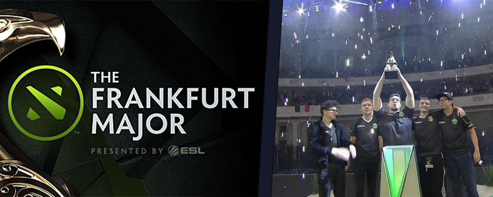
Team OG was originally formed under the name (monkey) Business and was comprised of both experienced veterans in n0tail and Fly as well as new and upcoming talents in Miracle-, Cr1t- and MoonMeander. The team achieved their breakthrough during the Frankfurt Major, defeating European powerhouse Team Secret in the grand finals. The team continued to have a strong presence in the European Dota scene later throught the year later winning rhe DreamLeague Season 4 and The Defense Season 5 winning a total of more that $1,200,000+ in their first year as a team
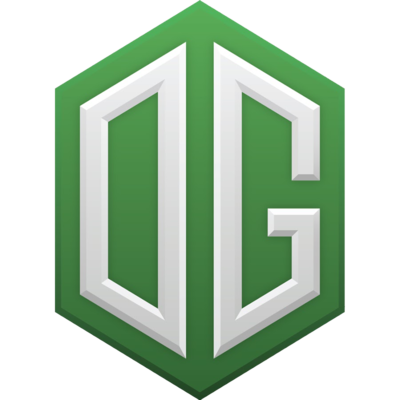
2016
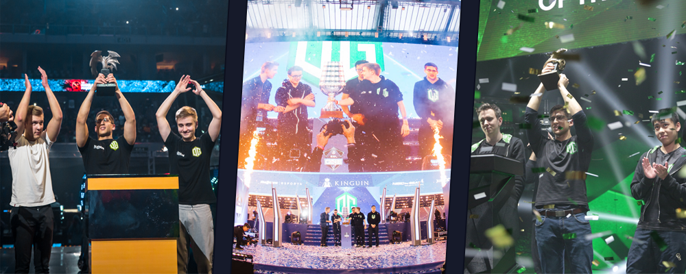
OG's dominance began to wane and ended with a 7-8th place finish in the Shanghai Major. Despite this, the team rebounded with a 3rd place finish at EPICENTER and claimed a second Dota Major Championship title at the Manila Major. The squad proceeded to defeat Natus Vincere at ESL One Frankfurt 2016, winning the tournament and securing their invite to The International 2016.
OG performed well in the group stage of The International 2016 and finished first in their group. Despite this, the team was unable to maintain their momentum and fell to the loser's bracket against MVP Phoenix. 7ckingmad would later say in his 'Reflections' interview with Duncan "Thorin" Shields that they chose to play MVP Phoenix after their 'complete domination' of them at the Manila Major, and that this may have been a mistake. Following this unexpected loss, the team was eliminated by TNC Gaming and finished 9-12th, in what has been referred to as one of the biggest upsets in professional Dota 2.[1] Shortly after their disappointing run, OG announced that MoonMeander would no longer be an active player, and that Cr1t- and Miracle- would be leaving the team. In the same 'Reflections' interview, 7ckingmad claimed that it was a personality conflict within the team that led to the removal of Moonmeander, and that once the team wasn't remaining as 5, it prompted Miracle to consider other offers.
To replace Cr1t-, Miracle- and MoonMeander, OG added Jerax, formerly of Team Liquid, Ana, and Alliance's s4. s4 would take on the offlane role, which was a new position for him but with familiar heroes in his signature Puck, Batrider, and Magnus. Ana came to the team from a substitute position for Invictus Gaming. With the addition of these new players, OG made a strong start to the season by claiming first place at the Autumn Major in 2016, held in Boston, USA, to become the first team to ever defend a Major title in Dota 2 history.
2017
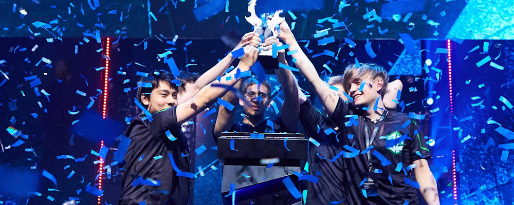
The team was directly invited to the Winter Major for 2017, held in Kiev. After securing a top seed finish in the group stage (finishing 3-1), they battled their way to the grand finals, beating Team Random, Evil Geniuses, and ultimately Virtus Pro in the grand finals to claim the Mystic Staff. The Grand Finals series for the Kiev Major was the first Valve event Grand Finals to go to a game five since The International 3; with s4 having played in both.
Afterwards, OG seemed unable to maintain their rhythm, finishing The Manila Masters in 5-6th place and failing to qualify for the main event of EPICENTER 2017. Nevertheless, they once again entered the year's International as strong favourites for the title. However, in keeping with their slowdown from the few months prior, OG failed to make it to the upper bracket in the group stages and were ultimately eliminated by LGD.
OG dominated the competitive Dota 2 scene during the era of Valve-hosted Major Championships between TI5 and TI7. During this period, OG won four of the seven official Dota Major Championships, cementing their status as legends of the game. OG currently hold several world records in Dota 2 as the only team to win multiple Dota Major Championship titles as well as claiming consecutive Major victories and defending a Major title as returning champions. Despite this, the team would have to wait another year and undergo more roster changes before they could claim the Aegis of Champions.
2018
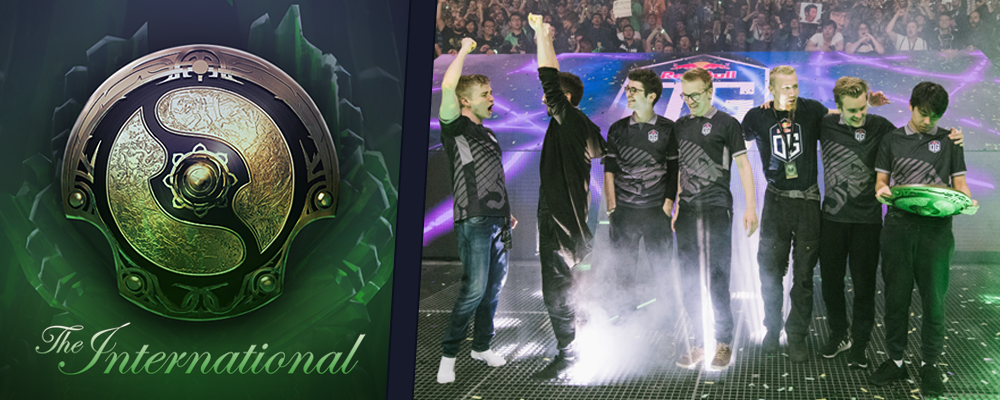
With Valve's new Dota Pro Circuit system, OG looked to once again set themselves up as a strong contender for The International 2018. After ana left the team to take a break from competitive Dota, Ukraine Ukranian player Resolut1on joined the squad to fill the vacancy. With their new addition, OG dove into the qualifiers for the first events of the Pro Circuit, but the team were unable to qualify for the first three events. They only came close to qualifying in the last qualifier, for StarLadder Season 3, where they lost in the grand finals to Team Secret.
TI8 was looming, but OG still had a tough road ahead: the brutal Bo1 gauntlet of the Open Qualifiers followed by the Regional Qualifiers. Due to the instability of the European scene in the past season, the Open Qualifiers were unusually stacked, yet OG managed to easily secure a Regional Qualifier spot through the first Open Qualifier. The team showed even more promise throughout the Regional Qualifiers, ending the group stage without dropping a single game and taking the direct route to the finals in the playoff bracket to become the only European Qualifier team at TI8.
Placed in Group A alongside DPC giants Team Liquid, PSG.LGD, and Mineski, OG's task at TI looked daunting. It would not get any easier after disappointing results on the first day of the Group Stage; despite taking a game off of favorites PSG.LGD, they were later swept by Team Liquid. As a result, after two days of the group stage, OG found themselves in the lower half of Group A. But a fantastic third day in the group, going 5-1 in total, dropping only a single game to Fnatic, would prove to be enough to secure OG a top 4 finish in their group and thus a spot in the Upper Bracket of The International 2018 Main Event.
The Grand Finals would see a rematch with PSG.LGD, and it would be only the second time a TI Grand Finals went the full five games. OG were crowned as the champions of The International 2018. They took the long way from the Open Qualifiers and were considered underdogs throughout the entire event until the final game, but they ultimately showed the necessary resilience to come out on top. It would be the first time that the West was able to take two TI championships in a row, as the familiar East-West cycle of TI champions was finally broken.
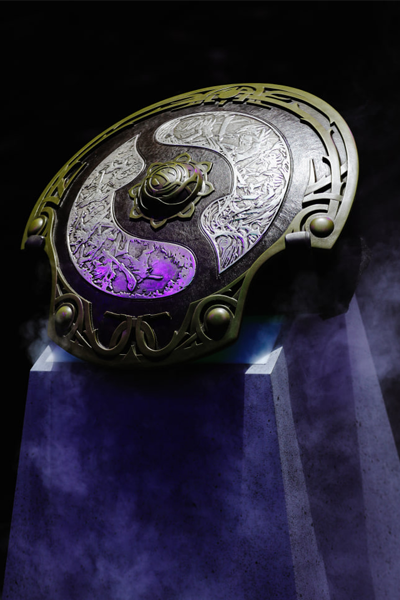
2019
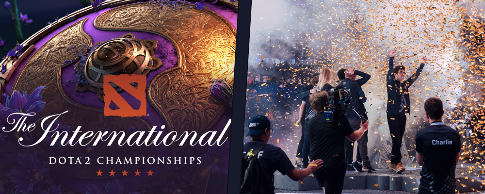
In April 2019, the team played against and lost to the OpenAI Five, a group of artificial intelligence bots that learned to play the game entirely through machine learning, in a live exhibition series in San Francisco. Later that month, Titouan Sockshka Merloz replaced Cristian ppasarel Banaseanu as team coach. The team earned a direct invite to The International 2019 by finishing in the top 12 of that season's Dota Pro Circuit. There, they went 14-2 in the group stage, advancing through the upper bracket before defeating Team Liquid in the grand finals 3-1, making them the first ever repeat champions of an International, being awarded $15.6 million out of the $34 million prize pool.
OG dominated every stage of the tournament to become two time TI champions, topping Group B after only dropping two maps, one of which was in a match that had no impact on the standings. They then went on a rampage through the upper bracket, knocking the likes of Newbee, Evil Geniuses and PSG.LGD to the lower bracket. Their carry IO strategy caught everyone off guard and was almost impossible to defeat, leading to teams just outright banning it, which opened up more traditional strategies for OG that they used to their full advantage.
They came back with exactly the same roster and put on an impressive show, dominating everyone they faced. There's simply no way to deny that this OG roster has had the best run across TIs ever seen and who knows where this run will end. It certainly wouldn't be surprising to see them come back again next year and do just as well.
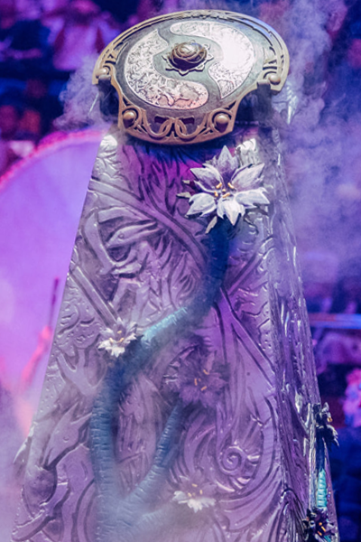
2020
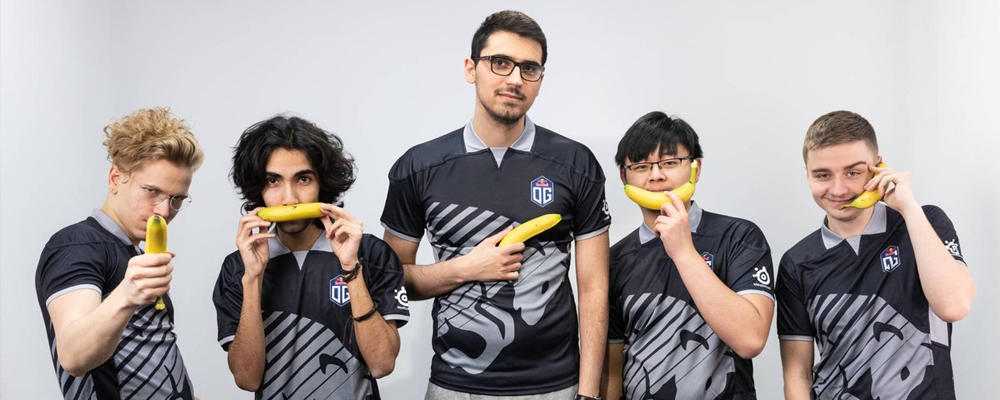
The Dota 2 team went through various changes in January 2020, with ana leaving to take another extended hiatus until the next Dota Pro Circuit season, JerAx announcing his retirement, and Ceb leaving the active roster to help focus on developing other players on the team. To replace them, the team signed Syed "Sumail" Hassan, Yeik "MidOne" Nai Zheng, and Martin "Saksa" Sazdov. Sumail was released from the team in July 2020, with Ceb replacing him as a player.
2021
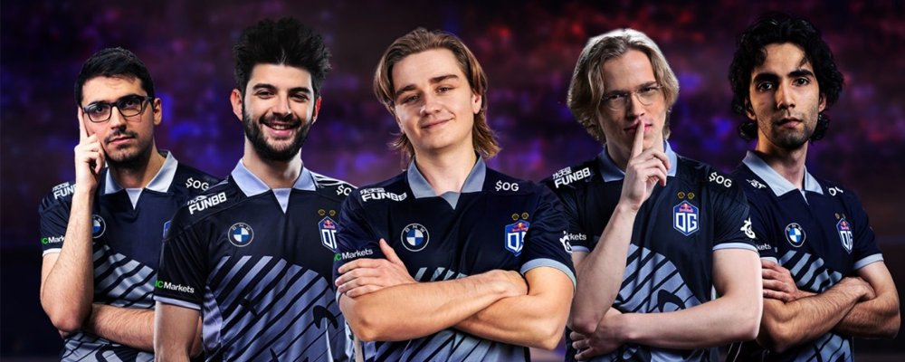
In March 2021, MidOne was removed from the roster,[citation needed] with ana briefly returning to the roster before announcing his retirement in June. Shortly after, the team re-signed Sumail. OG qualified to The International 2021 via regional qualifiers, but were eliminated 2-0 in the lower bracket to the tournament's eventual champion Team Spirit. In April 2021, OG announced the news on its official website that OG and German car brand BMW announced a partnership. In November 2021, the roster underwent significant changes as Sumail and Saksa were released, Ceb announcing his retirement from professional play, while Topson and N0tail left the active roster after deciding to take a break from the professional scene. In November 2021, OG announced an entirely new roster consisting of Artem "Yuragi" Golubiev, Bozhidar "bzm" Bogdanov, Ammar "ATF" Al-Assaf, Tommy "Taiga" Le, and Mikhail "Misha" Agatov, who had previously served as the team's coach.
2022
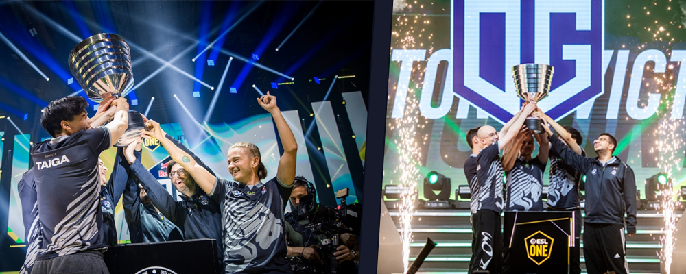
OG's new squad consisted of three new bloods Artem "Yuragi" Golubiev, Bozhidar "bzm" Bogdanov, and Ammar "ATF" Al-Assaf. The new trio has maintained the splendor oozed by team OG in their first-ever Dota 2 Major appearance. Meanwhile, living legends Sébastien "Ceb" Debs and Tommy "Taiga" Le acted as senior players.
But it's worth noting that OG ran into a major inconvenience during the playoffs. When it became apparent that their existing captain Misha and coach Evgenii "Chuvash" Makarov could not be present due to travel concerns, OG had to bring Ceb out of retirement to play an active role on the squad as a stand-in. N0tail joined him in, coaching the younger lineup, since the bulk of them were making their LAN debut.
As the victors of the ESL One Stockholm Major 2022, OG receives $200,000 USD and 680 Dota Pro Circuit (DPC) points. As a result, the squad has amassed 1140 points, thereby clinching a spot at The International 11.
OG has won the ESL One Malaysia Dota 2 tournament after beating the Chinese squad, Team Aster, in the grand final.
OG took the grand final with a 3-0 scoreline, taking down Team Aster in a convincing fashion. In game two of the grand final Team Aster's Du "Monet" Peng managed to get an impressive rampage while defending the base, in what was one of the best plays of the entire event, but it was not enough to stop OG, who would go onto win the game and later the series.
Throughout the series, Mars was the hero to watch. OG first picked the offlaner for Ammar "ATF" Al-Assaf in games one and two, and he proved just how good he is on the hero. In game three, instead of banning the Mars that caused them problems, Team Aster decided to pick it for themselves, but OG were able to counter it, at times using Underlord to simply teleport away when Mars tried to start a fight, proving they were just a step ahead in this game.
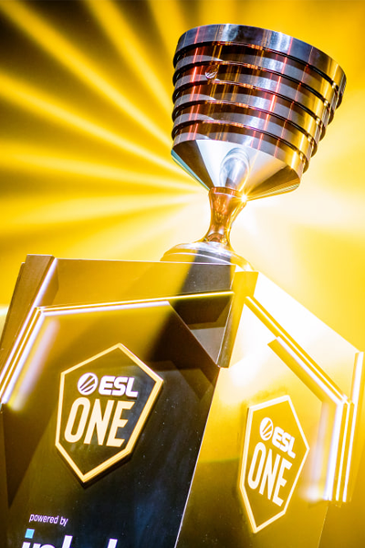
2023

Teams performance was underwhelming during the year, not coming close to winning any tournaments. The same year a new team was creted by the name of OLD G consisting of some of the former OG players such as Ceb, N0tail and Topson as well as MSS and No[O]ne-. The new team was short lived and they didn't even manage to qualify to any major tournaments.
2024

Three players have been retained while two new players join the fray to complete OG's new Dota 2 lineup for the upcoming season. OG's co-founder, captain and two-time TI champion Ceb will continue to guide the team as its position five. OG's other core of Ari and Wisper remains intact, but the fresh recruits promise a new era for the team. 23 and Nine join OG to complete its Dota 2 roster. 23 previously played for Aurora and finished in the top eight at The International 2024, however, he parted ways with them ahead of the new season. Meanwhile, Nine returns to the competitive landscape after a nearly one-year hiatus. The German established himself as one of the top midlaners in Europe and would eventually win the biggest title in Dota 2 esports - The International 2022.Nine previously played for Tundra Esports before taking a break after the team's dismal performance at The International 2023. However, he later stood in for Falcons Esports at PGL Wallachia Season 1 back in May and looked in prime form.
2025

So far into the year OGs future is unclear with them releasing their team and remaking it from scratch once again. However this strategy has worked for them in the past. OG also announced their new team OG LATAM which stands for OG Latin America consisting of 5 peruvean players K1, DarkMago, ILICH-, Elmisho and MoOz most of which were a part of semi-successfull team beastcoast. With their first tournament being DreamLeague Season 26 with a prize pool of $1,000,000